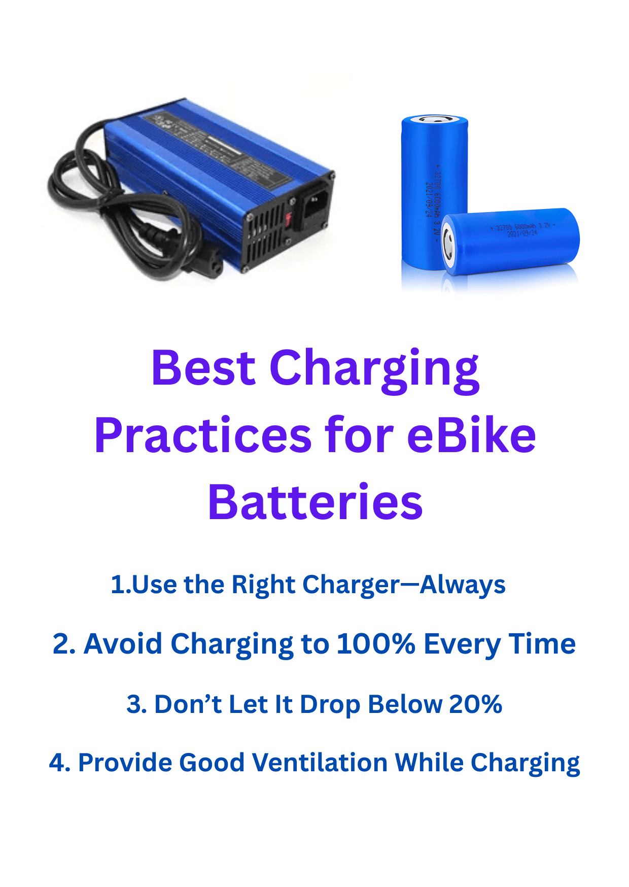

Best Charging Practices for eBike Batteries
Your eBike battery is the most expensive and essential component of your electric bike. How you charge it determines how far you can ride and how long the battery will last. Most riders plug in and forget—but small mistakes can shorten the battery’s lifespan dramatically. This detailed guide covers the best charging practices for eBike batteries to help you keep performance high and costs low.
Understanding How eBike Batteries Work
Most modern eBikes use lithium-ion batteries, known for high energy density, long cycle life, and lightweight construction. However, lithium cells are sensitive to voltage, temperature, and charge cycles. Every time you charge and discharge, a tiny bit of capacity is lost. Good charging habits slow this aging process and protect your investment.
1. Use the Right Charger—Always
Every eBike comes with a dedicated charger calibrated to its battery voltage and current rating. Using a random charger, even if the connector fits, can cause over-voltage or overheating. Over time this leads to capacity loss or even permanent damage.
Best practice: Only use the original charger or one approved by your eBike manufacturer. If you lose it, match voltage exactly and never exceed the rated amperage. A certified smart charger that automatically stops at full charge is ideal.
2. Avoid Charging to 100% Every Time
It’s tempting to charge to full capacity before every ride, but holding a lithium battery at 100% increases internal stress. If you commute short distances daily, partial charging significantly extends cell life.
Best practice: For daily use, charge up to 80–90%. Reserve full charges for long trips. If your charger has no percentage indicator, unplug once the indicator light turns green.
3. Don’t Let It Drop Below 20%
Deep discharging (running the battery to zero) accelerates wear and can push the voltage below the safe minimum. Some battery management systems will permanently lock the pack for safety.
Best practice: Recharge when the level falls to 20–30%. This keeps the chemistry balanced and avoids deep-cycle stress.
4. Charge at Moderate Temperatures
Charging a hot or cold battery can damage internal components. Temperatures outside 10°C–30°C (50°F–86°F) reduce efficiency and may cause plating on the anode—an irreversible form of degradation.
Best practice: After a long ride, let the battery cool for at least 30 minutes before charging. During winter, bring it indoors and let it reach room temperature first.
5. Provide Good Ventilation While Charging
Though lithium batteries are safer than older chemistries, they still generate heat. Charging in a confined space traps heat and moisture, increasing the risk of thermal stress.
Best practice: Place your charger and battery on a hard, non-flammable surface such as ceramic tile or concrete. Avoid charging on beds, carpets, or near flammable materials. Good airflow ensures cooler operation and longer battery life.
6. Don’t Leave the Battery Plugged In Overnight
Modern chargers stop current flow once full, but trickle current can resume as voltage naturally drops. Over months, this repetitive micro-charging shortens the cell lifespan.
Best practice: Disconnect the charger after the battery reaches full charge or after 3–5 hours. If you need unattended charging, use a smart plug timer that cuts power automatically.
7. Charge Frequently, Not Seldom
Contrary to old myths, you don’t need to “train” lithium batteries with full cycles. Frequent top-ups are healthier than full discharges.
Best practice: If you ride daily, plug in briefly after each trip to maintain 60–90% charge. Keeping voltage stable helps prevent imbalance among individual cells.
8. Store Partially Charged if Idle
If you won’t use the eBike for several weeks, don’t store it fully charged or empty. A resting charge between 40–60% minimizes chemical stress during storage.
Best practice: Before long-term storage, charge to about 50%, disconnect from the eBike, and keep in a cool, dry place. Check every two months and top up slightly if it drops below 30%.
9. Keep Connectors Clean
Dust, oxidation, and moisture on charging ports can increase resistance and cause poor contact or overheating.
Best practice: Wipe connectors with a dry microfiber cloth and inspect for corrosion. Apply a small dab of dielectric grease if you live in humid areas.
10. Avoid Cheap Replacement Chargers
Many low-cost chargers sold online lack temperature sensors or proper cut-off protection. They may overcharge or deliver unstable voltage spikes that degrade the battery rapidly.
Best practice: Invest in a high-quality charger certified for lithium-ion batteries (UL- or CE-approved). It’s cheaper than replacing a burnt-out pack.
Common Charging Mistakes to Avoid
- Leaving the charger connected for days.
- Charging right after a hot ride.
- Using an extension cord with thin wires that overheat.
- Ignoring charger LED indicators or warning lights.
- Covering the charger while it’s operating.
Quick Charging Checklist
- ✅ Charge between 10°C–30°C.
- ✅ Stop at 80–90% for daily use.
- ✅ Avoid dropping below 20%.
- ✅ Use manufacturer-approved charger only.
- ✅ Disconnect once full.
FAQs on eBike Battery Charging
Can I charge my eBike battery overnight?
It’s safe occasionally, but avoid doing it daily. Use a timer or smart plug to stop charging after completion.
Should I charge after every ride?
If your trip uses less than half the battery, it’s fine to top up to 80–90%. Frequent small charges are healthier than full cycles.
Can I use a fast charger?
Only if your eBike supports it. High current charging reduces cycle life if not specifically designed for it. Standard charging keeps the pack balanced and cooler.
Final Thoughts
Following these best charging practices for eBike batteries ensures a longer lifespan, stable performance, and fewer replacements. Charge smartly, stay within safe temperature ranges, and use quality equipment. Your battery will reward you with hundreds of reliable cycles and consistent range.
Explore more battery care guides such as Top 3 Ways to Extend Battery Life and How to Store Your Battery Safely. Or visit our Battery Calculators to estimate charging time and range instantly.
